What is holding the PC back right now, biggest first: a program eating the processor, memory WSL will not give back, a Defender scan, a restart Windows is waiting for. Each one comes with what to try.
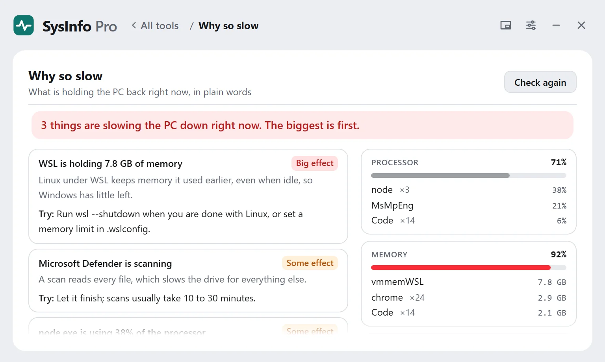
SysInfo Pro 3.2 · free for Windows 10 and 11
Why your PC is slow, what is filling your drive, where your connection breaks and what is wrong with your dev setup, in plain words, with what to try next. Every tool works without administrator rights, and every number is what Windows and your drives actually report. Built for people who write code on Windows, and just as useful for everyone else.
Free · installs in seconds · updates automatically · no account
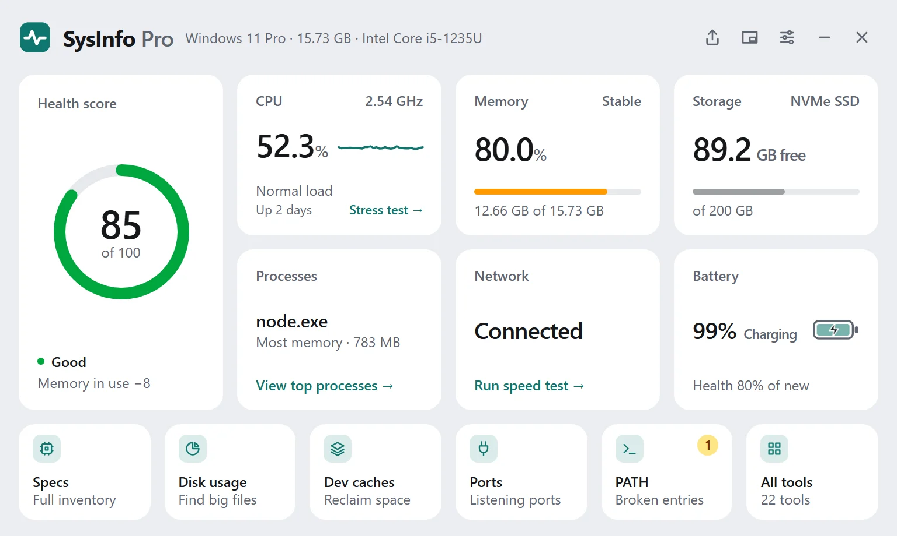
Each one answers a question you would otherwise open three programs to answer. Pick a card to see it. In the app, show the tools for everyday use, development or gaming, or press Ctrl+K and type what you need.
What is holding the PC back right now, biggest first: a program eating the processor, memory WSL will not give back, a Defender scan, a restart Windows is waiting for. Each one comes with what to try.

Every project on a drive, checked read-only for work that exists only on this PC: commits never pushed, stashes, uncommitted changes and projects with no remote. Nothing is fetched or changed.
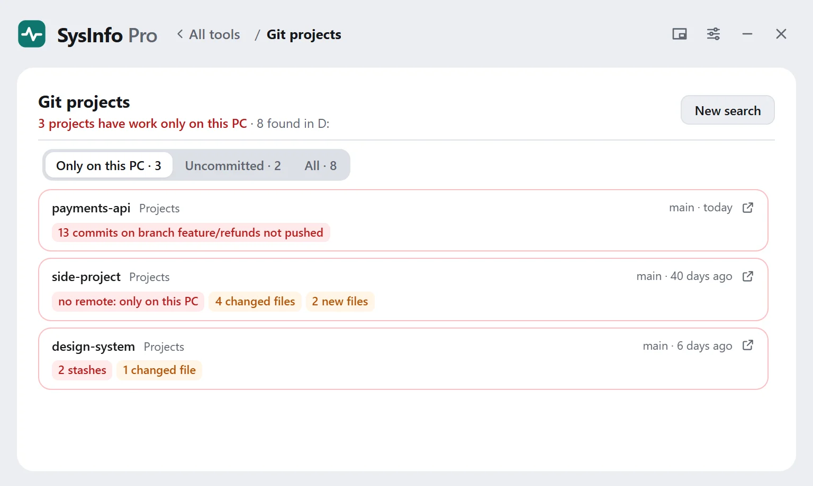
Which python, node or java actually runs when you type it, every other copy on your PATH, and why the wrong one wins, such as the Store placeholder or an install that hides nvm.
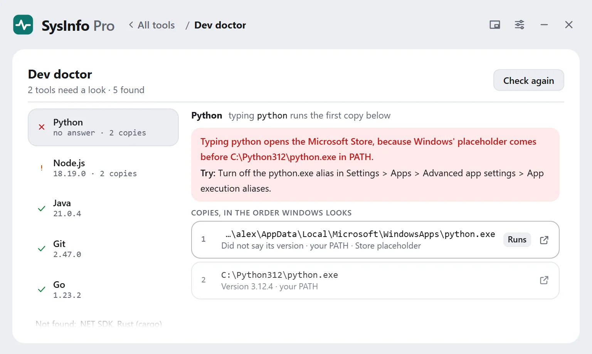
Checks the adapter, router, name lookup and internet in order, then names the link that broke and how to fix it. Proxies and hosts-file entries are checked too.
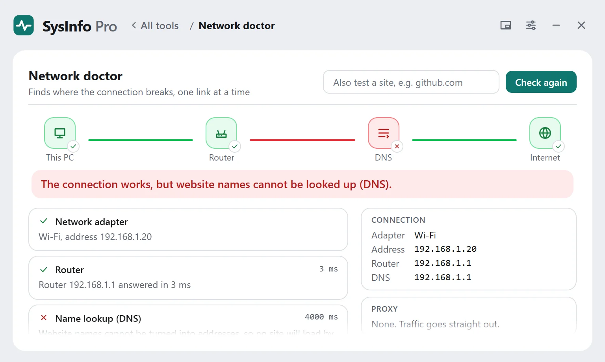
Files with exactly the same contents anywhere on a drive. Keep the oldest or the newest copy; the rest go to the Recycle Bin. Online-only OneDrive files are skipped.
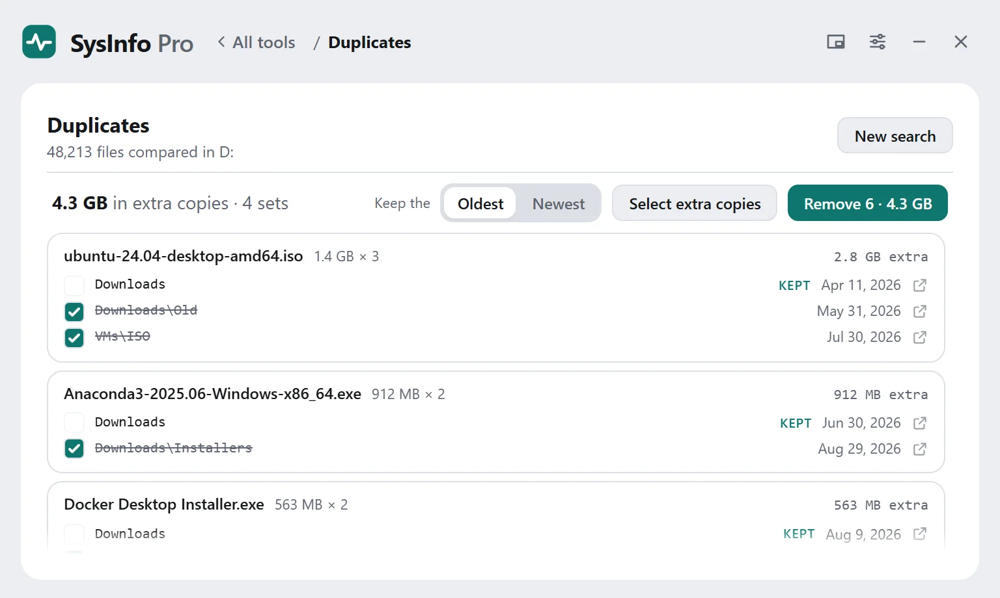
A checklist before you sell or pass on a PC: accounts still signed in, files to copy, developer keys and tokens to revoke, and the reset at the end. Passwords and keys are never read.
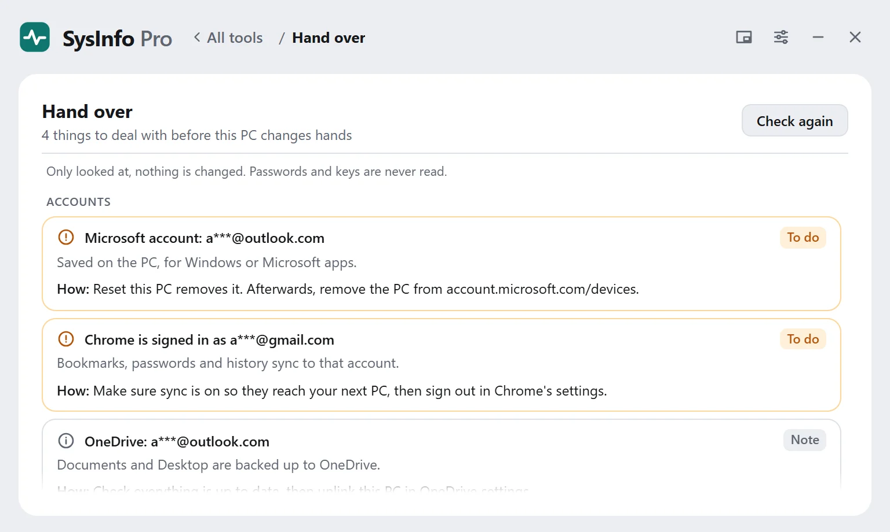
See which project and git branch opened each port, how long it has been running, and stop it in one click.
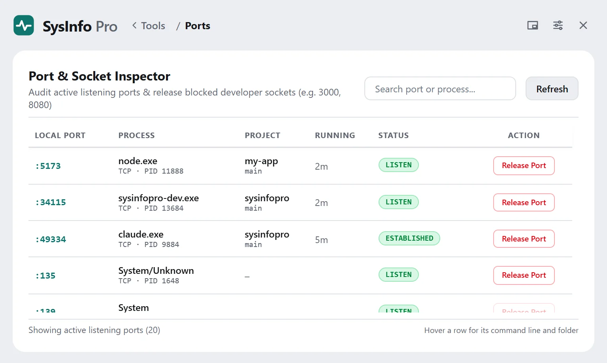
Sizes your npm, pnpm, pip, NuGet, Gradle, Maven, Cargo and Go caches, finds old node_modules, Rust and .NET build folders and Python environments, and frees everything unused for months in one click.
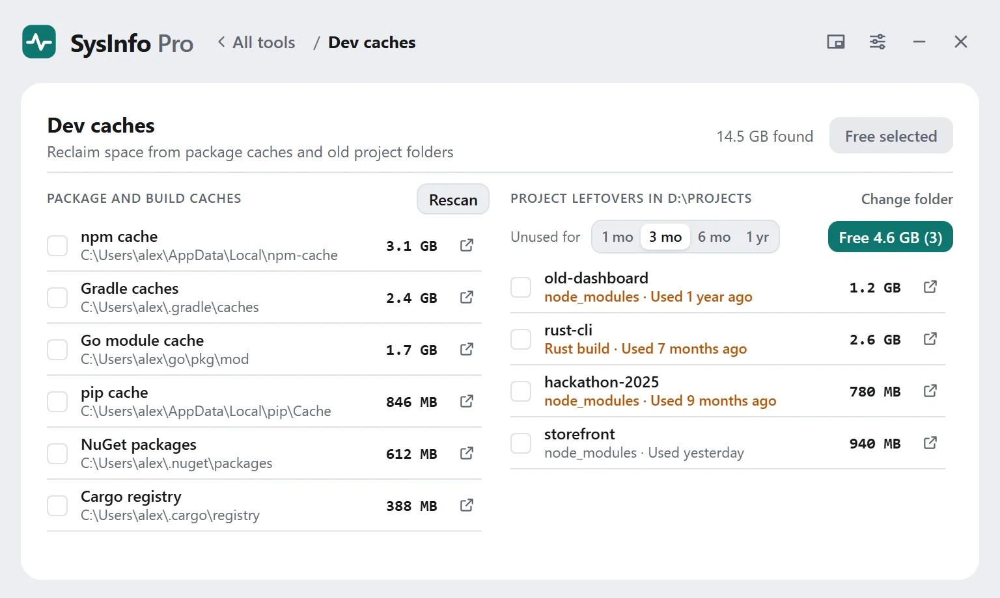
Pick the file or folder that will not delete. See every program holding it open, and end the one in the way.
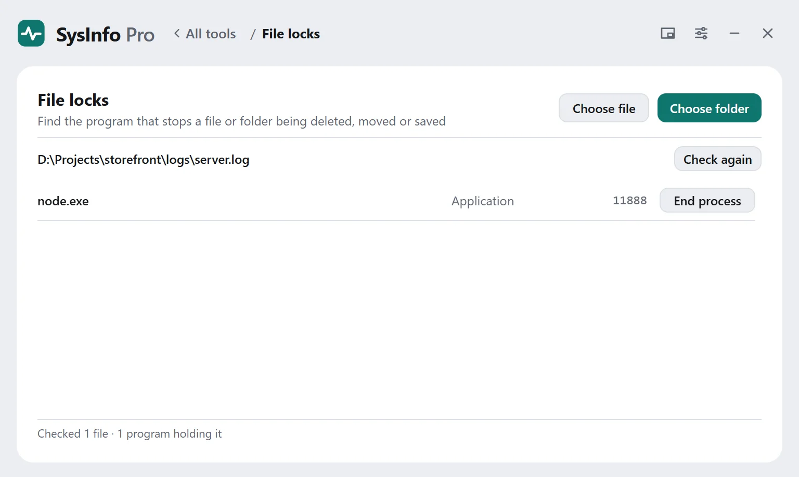
Find the largest folders and files on any drive, then watch a folder to see what is growing right now and how fast.
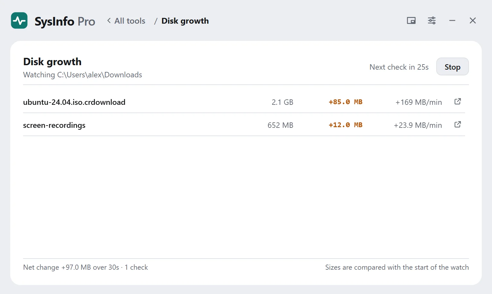
Antivirus, firewall, updates, BitLocker, Secure Boot and more in one read-only pass. Nothing is changed.
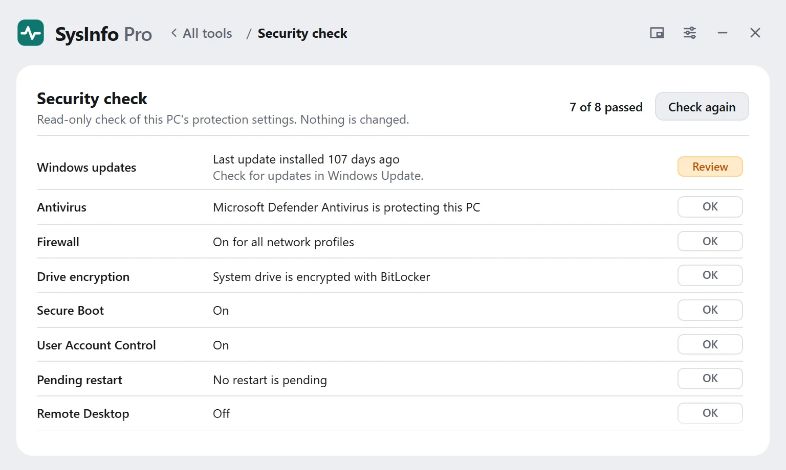
A health score from measured values, a live Processor view, Battery history, What changed, hardware specs with a shareable report, WSL and Docker disk sizes, winget app updates, a PATH fixer with undo, startup programs, speed test and a stress test.
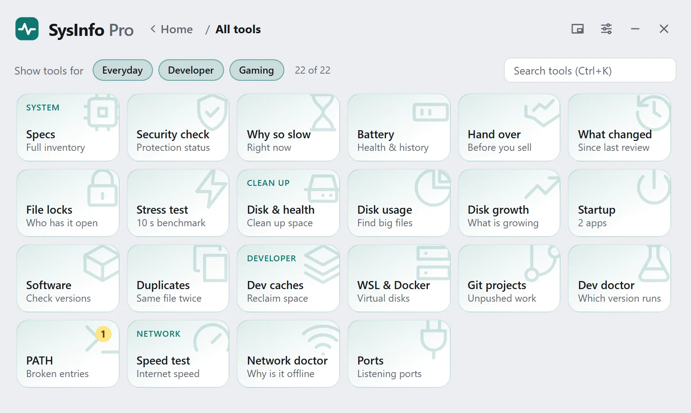
Shrink the app to a small floating window and keep an eye on CPU, memory, battery and the space left on each drive while you work. An arrow appears the moment a drive starts filling up, and an alert when it runs low. Press Ctrl+Alt+W to switch to it from any app.
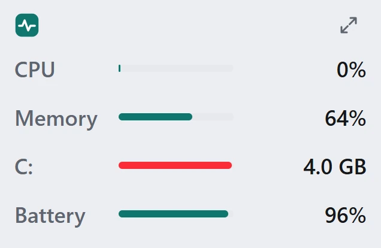
Windows 10 or 11, 64-bit. Free, with automatic updates.
The GitHub download is a single program file, no installer: delete it to remove it, and its
settings are in %APPDATA%\SysInfoPro. It is not code-signed yet, so Windows
may warn the first time you run it; the Microsoft Store version is signed by Microsoft.
Code signing policy